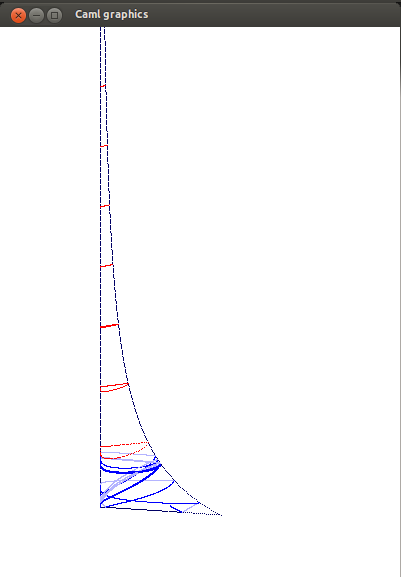
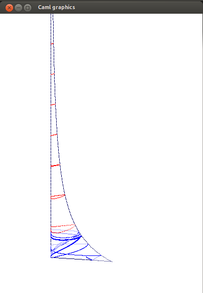

En bleu, quelques rayons géodésiques sur l'espace de modules du tore $ M = \mathrm{SL}(2,\mathbb{Z}) \backslash \mathrm{SL}(2,\mathbb{R}) / \mathrm{SO}(2) $ plongé (non isométriquement) dans $\mathbb{R}^3$. En bas les deux points singuliers (ordre $2$ à gauche, ordre $3$ à droite) ; en rouge des horocycles. A gauche : géodésique rationnelle, vers la pointe. Au milieu : convergence vers une géodésique périodique (ici la seconde plus courte). A droite : hauteur non bornée. Le troisième cas est presque sûr au sens de la mesure de Liouville. De plus si l'on pose $h$ la hauteur et pour tout $t>0$ \[ H_t = \sup_{s < t} h(s) \] alors $\limsup \log H_t / \log t$ est presque sûrement égale à $1$ (Sullivan 1982), et $H_t /t$ converge en loi vers une loi de Fréchet (Guivarc'h, Le Page 2013).